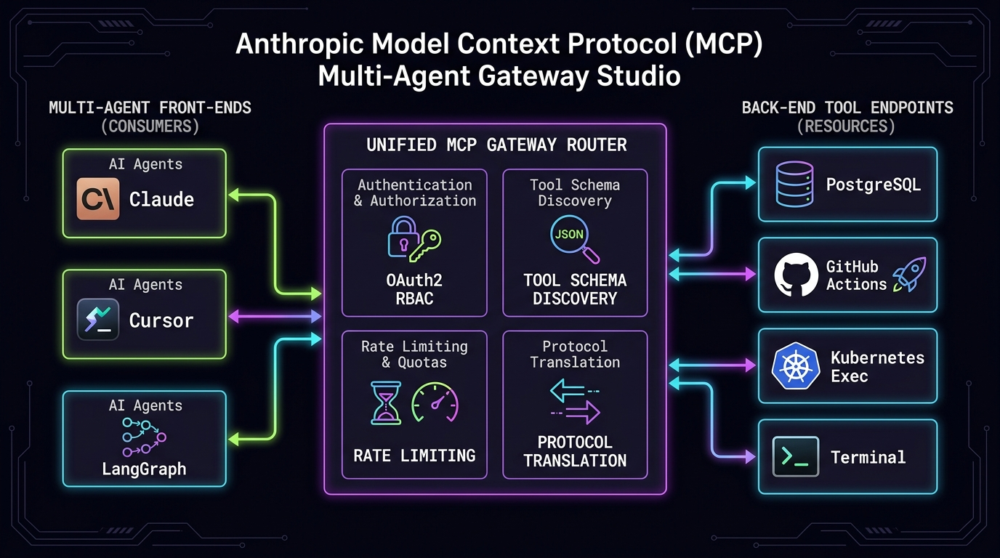

Model Context ProtocolJSON-RPC 2.0SSE MultiplexingZero-Trust RBAC🎬 3Blue1Brown Manim
Anthropic Model Context Protocol (MCP) Multi-Agent Gateway Studio
Enterprise Model Context Protocol gateway providing dynamic tool discovery, fine-grained OAuth2/RBAC security gates, and bi-directional SSE streaming across multi-agent fleets.
Discovery Latency
<2.1 ms
cached tool schemas
RBAC Gate Check
100%
zero-trust compliance
Max Concurrent Tools
10,000+
SSE multiplexed streams
Yearly SecOps ROI
$48,500
centralized agent audits
⚙️ Studio Parameters Live Sync
💰
Enterprise MCP Governance FinOps Impact
Consolidating ad-hoc point-to-point tool APIs into a unified MCP gateway eliminates redundant integrations and credential leakage, saving $48,500/yr.
// Compiling architecture specifications...
Interactive SRE Terminal Emulator
Quick Commands:
•
•
•
$ # SRE terminal initialized. Enter command or click above.
$
📐 Architectural Execution Blueprint
Verified Production Pipeline